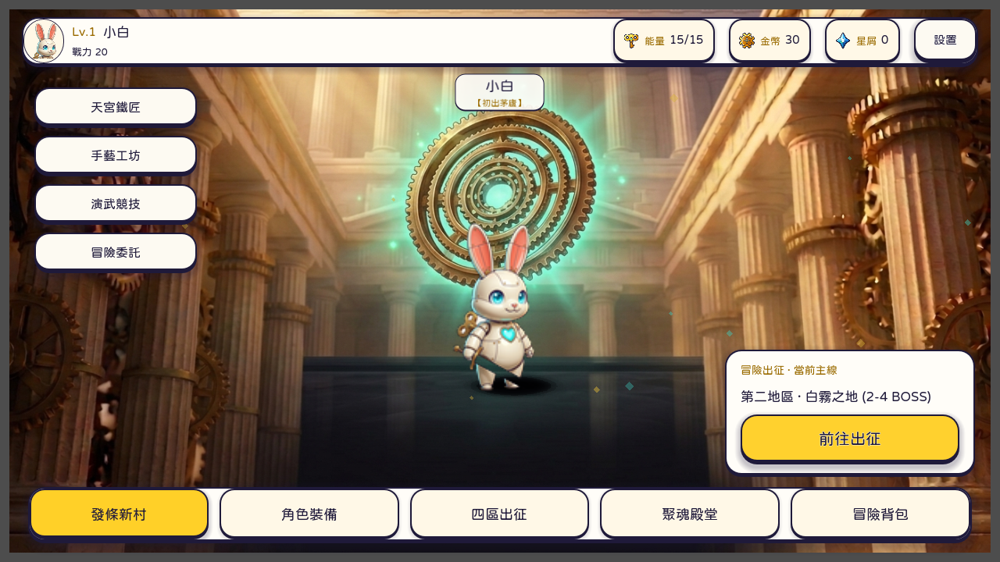

今日村莊 · 每日委託
已就緒每日開啟遊戲皆有豐富委託，引導狩獵探索與演武挑戰，享受踏實收穫。

「動起來吧，小傢伙，去看看這個停下來的世界。」當世界大鐘停擺，背負十五圈發條的玩具白兔握緊長劍。
《發條之心》（Clockwork Heart）· 發條玩具世界冒險譚
About Clockwork Heart · 遊戲介紹
《發條之心》（Clockwork Heart）是一款以「覺醒的發條玩具」為世界觀的橫屏動作角色扮演手遊。 在世界大鐘停擺的靜止世界中，玩家將引導背後附帶黃銅發條鑰匙、胸口跳動齒輪核心的米白金屬玩具兔「小白」，展開重啟世界動力的冒險旅程。

橫屏手遊 · 實機畫面Key Visual & Canon
希臘石柱長廊環繞著永動金色齒輪；遠方神秘身影操縱著浮空運轉的發條之心，引領甦醒的金屬公仔英雄重啟世界。
官方主視覺 · 希臘神殿與黃金齒輪
零毛皮、精緻金屬板件與螺栓鉚釘，每位英雄身後皆裝有標誌性的黃銅發條鑰匙。2.2 頭身矮萌公仔比例，各持專屬武器並背負著重啟世界的使命：
In-game
舒適親切的橫屏手遊介面，享受與發條英雄的日常陪伴。
在大廳中，小白會隨風輕輕擺動金屬長耳；點擊戳碰還能觸發活潑的對話氣泡與肢體反應。專為橫屏手遊打造的雙拇指人體工學配置，介面清爽俐落，所有重要功能一觸即達。
Realm of Wonder
2.2 頭身金屬發條白兔「小白」，以長耳共鳴感知零件破綻，挺身迎戰巨大的失控機關。
穿過晨曦工坊，向廣闊的玩具世界邁進。村莊內座落著四大功能殿堂：鐵匠工坊、聚魂殿、手藝工坊與武術館，每一處都能親身踏入探索。
Moments
旅途裡最令人期待的三個瞬間——強敵對決、聚魂殿抽魂、鐵匠鋪鍛造。
雜兵戰流暢暢快，面對頭目級強敵時，長耳聆聽與精準格擋才是破敵之道。仔細觀察對手的攻擊軌跡，看準時機化解攻勢並展開反擊。
Explore
騎士堡壘、霧隱村、武鬥道場、遊俠森林、維京深港、法師之塔——岔路自由選序，依當前戰力挑戰首領。
Core Systems
小白長耳感知共鳴破綻。敵方承受傷害時零件出現裂痕，精準破壞部位能削弱強力招式並奪取關鍵零件。
抽取封靈罐凝聚戰魂，累積虔誠度鑲嵌進階核心。戰意打滿時發動極限運轉，大幅提升戰鬥節奏。
鐵匠工坊鍛造升階不爆裝、聚魂殿抽取封靈罐、手藝工坊精鑄飾品、武術館研習進階招式，機能一體成形。
Integration
傳承經典韻味，為現代手遊體驗重新打造。村莊日常、演武天梯、野外探索與戰魂養成全數就位。
每日開啟遊戲皆有豐富委託，引導狩獵探索與演武挑戰，享受踏實收穫。
直觀雙手拇指點擊操作，移動、互動與戰鬥一氣呵成，介面清爽俐落。
多波天梯與每日挑戰，驗證流派陣容實力，換日結算豐厚榮譽獎勵。
探索區域獵場採集鍛造材料，累積經驗與資源，享受成長樂趣。
鐵匠鋪、聚魂殿、手藝工坊、武術館各司其職，親臨殿堂體驗深度養成。
凝聚戰魂累積虔誠度，保底獲取珍稀碎片，自由吸收強化核心戰魂。
留言石壁、通關燭火與世界排行，感受來自各方冒險旅人的痕跡。
切磋好友留下的防守戰術，贏得友情獎勵與解鎖友誼寶箱。
適合誰玩
喜愛發條玩具世界觀奇想冒險 熱愛裝備流派搭配與頭目部位拆卸 想無壓力離線單機體驗完整主線 享受輕鬆有深度的角色養成Footage
全新 2.2 頭身插畫風格與手遊操作介面調校中，最新畫面陸續釋出。